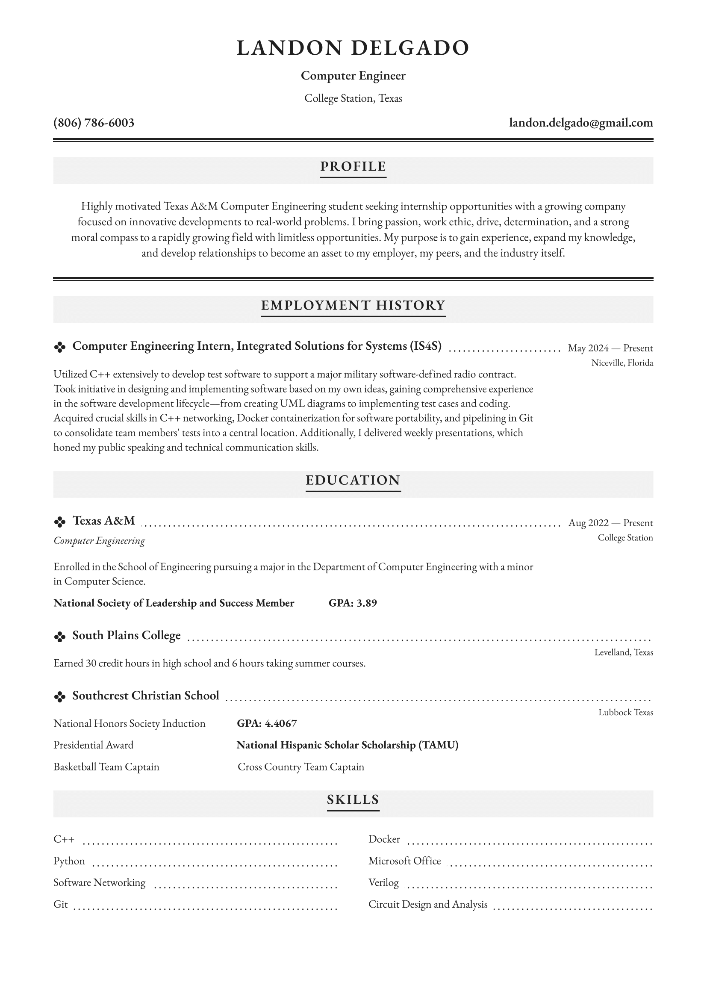

Area of Interest
My primary area of interest lies within the Department of Defense, with a specific focus on the aerospace industry. I am passionate about contributing to the development of software in military and aerospace applications. During my time at IS4S, I gained valuable experience working on software networking which has further affirmed my passion for this field. I hope to continue to contribute in the military aerospace industry through software engineering, helping to advance the defense of our country.
Skills